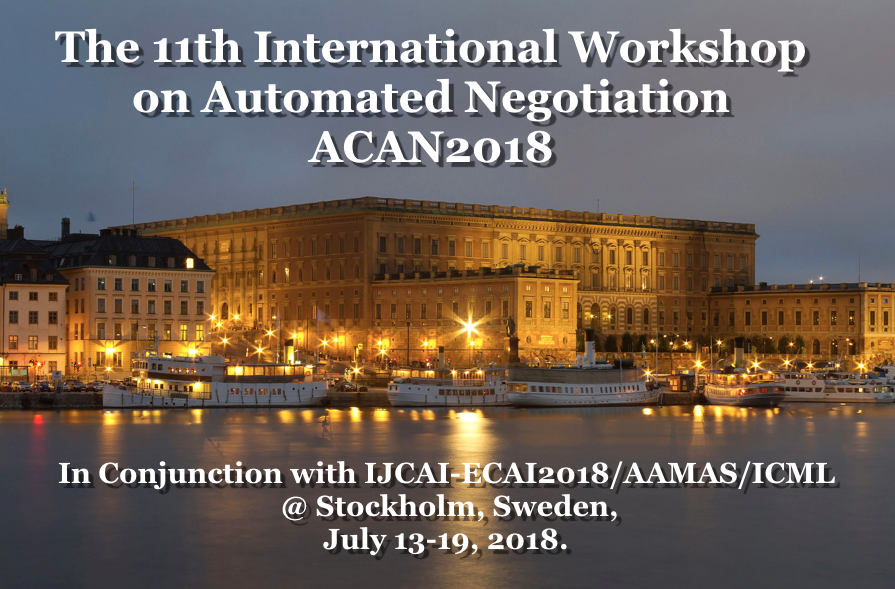

Timetable
8:00 -8:30 - Registration
08:50 - 09:00 Introduction
09:00 - 09:30 Full Paper: Tatsuya Toyama and Takayuki Ito.
Quantitative Metric for Evaluating Difficulty in Reaching Agreements
in Multilateral Closed Negotiation Scenarios
09:30 - 10:00 Full paper: Amro Najjar, Yazan Mualla, Kamal Singh and
Gauthier Picard. One-to-Many Multi-agent Negotiation and Coordination
Mechanisms to Manage User Satisfaction
================================================================
10:00 - 10: 30 Coffee Break
=======================================================================
10:30 - 11:30 Invited Talk
11:30 - 12:00 Full Paper: Onuralp Ulusoy and Pınar Yolum.
Collaborative Privacy Management with Auctioning Mechanisms
12: 00- 12: 30 Full Paper: Ryohei Kawata and Katsuhide Fujita.
Cooperativeness Measure based on the Hypervolume Indicator and
Matching Method for Concurrent Negotiations
=====================================================================
12:30 - 14:00 Lunch Break
========================================================================14:00
- 14: 30 Full Paper: Reyhan Aydogan, Onur Keskin and Umut Cakan,
Let's negotiate with Jennifer! Towards a Speech-based Human-Robot
Negotiation
14:30 - 15:00 Full Paper: Takayuki Ito. Effect of Morality for
Automated Negotiating Agents: A Preliminary Result
15:00 - 15:30 Full Paper (ANAC session) Reyhan Aydogan, Katsuhide
Fujita, Tim Baarslag, Catholijn Jonker and Takayuki Ito. ANAC 2017:
Repeated Multilateral Negotiation League
============================================================
15:30 - 16:00 Coffee Break
===================================================================
16:00- 16:20 Short Paper : Zahra Khosravimehr and Faria
Nassiri-Mofakham. Effective Acceptance Strategy using Cluster-Based
Opponent Modeling in Multilateral Negotiation
16:20 - 16:40 Short Paper: Vishal Sunder, Lovekesh Vig, Arnab
Chatterjee and Gautam Shroff. Prosocial or Selfish? Agents with
different behaviors for Contract Negotiation using Reinforcement
Learning
16:40 - 17:00 Short paper: Tomoya Fukui and Takayuki Ito. A Proposal
of Automated Negotiation Simulator "Jupiter" for Negotiating Agents
Using Machine Learning
17:00 - 17:30 ANAC Session, Reyhan Aydogan, Katsuhide Fujita,
Takayuki Ito, Tim Baarslag & Closure